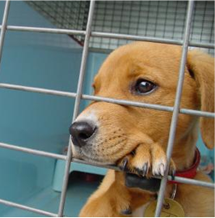

Dog Handler
Assist Pet Adoption League in handling and showing rescue dogs for adoption. Tasks will include walking, grooming, playing with dogs and cleaning kennels.EVERY Saturday at the 71st & Hwy 169 PETSMART Special events may include Sundays 9am - 3pm